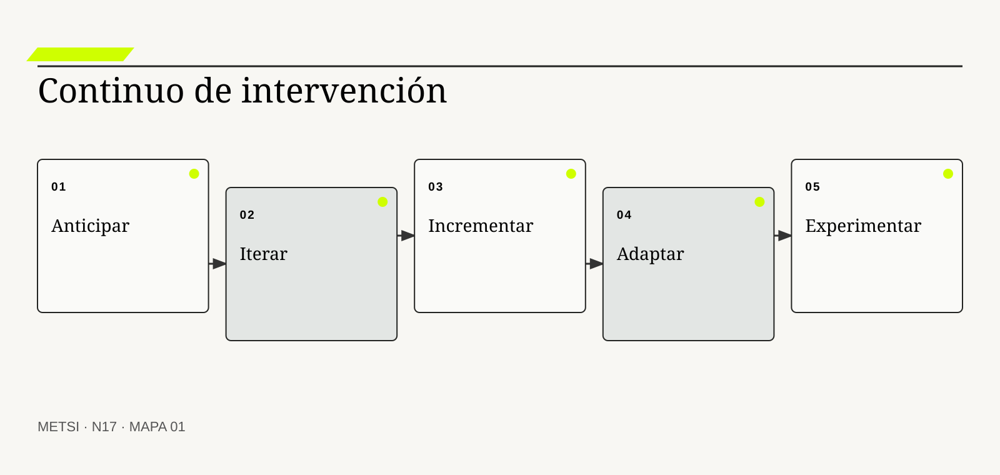
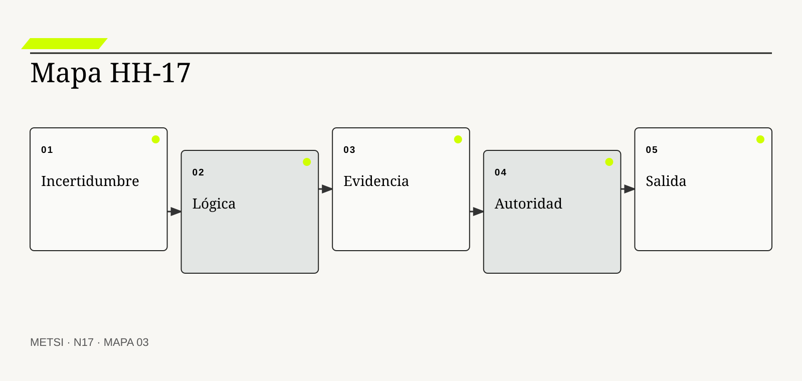

Barry Boehm
Vinculó ciclos de desarrollo con reducción progresiva de riesgo.

N17 separa las lógicas de intervención por el modo en que producen conocimiento y compromiso.
Lógicas predictivas, iterativas, incrementales, adaptativas y experimentales
Ruta de lectura: problema, distinciones, decisiones, prueba, transferencia y preparación.
Nota. SIN NUM. identifica aparatos de orientación y referencia.
Seis voces para ampliar, contrastar y discutir N17.
Vinculó ciclos de desarrollo con reducción progresiva de riesgo.

Mostró los límites de una secuencia lineal sin retroalimentación.

Explicó la reflexión durante la acción profesional.
Relacionaron formas de decisión con contextos de causalidad y conocimiento diferentes.

Sistematizó el tailoring y el continuo de enfoques predictivos, híbridos y adaptativos.
Consolidó principios para responder al cambio mediante colaboración y entrega frecuente.
N17 no resume estas fuentes ni las convierte en receta. Las pone en tensión para construir juicio profesional.
¿Cómo elegir una forma de intervención cuando algunas decisiones pueden anticiparse, otras necesitan aprendizaje y varias no admiten el mismo costo de error?
Hotel Horizonte aprueba un proyecto para reducir la espera de ingreso. El plan define nueve meses, alcance estable, proveedor, presupuesto y una secuencia de análisis, configuración, pruebas y despliegue. Cada hito se cumple. El nuevo módulo entra en producción el día previsto y registra el mismo estado que ya utilizaba el PMS: habitación liberada.
Durante esos nueve meses, HH-16 había mostrado que liberada significaba cosas distintas para Housekeeping, Recepción y Comercial. El proyecto conserva el término porque cambiarlo afectaría integraciones y reportes. La solución cumple el alcance contractual y acelera la propagación de una ambigüedad conocida. El primer fin de semana, las confirmaciones salen antes y también aumentan las reasignaciones, las esperas y las compensaciones.
La explicación fácil culpa al enfoque predictivo. Sin embargo, varias decisiones sí necesitaban anticipación: contratos, ventanas de mantenimiento, migración, capacitación y continuidad operativa. La falla no estuvo en planificar, sino en aplicar una única lógica a preguntas con incertidumbres y consecuencias diferentes. La semántica requería iteración; el flujo podía entregarse por incrementos; la regla comercial necesitaba adaptación; una nueva promesa exigía experimento controlado.
El equipo reabre el trabajo sin declarar fracaso total. Conserva compromisos irreversibles y transforma otros. Establece una baseline técnica para la migración, una serie de prototipos para las reglas, un incremento limitado a dos pisos y un experimento con confirmaciones sólo cuando cerradura, asignación y accesibilidad están verificadas. Cada tramo produce evidencia para la decisión siguiente.
La estrategia deja de nombrarse por una etiqueta global. En una misma intervención conviven cadencias, grados de anticipación y mecanismos de aprendizaje. El criterio no es qué método resulta moderno, sino qué se sabe, cuánto cuesta equivocarse, qué puede revertirse y cuándo existe evidencia suficiente para comprometer más recursos.
N17 abre el Bloque D con esa disciplina. Recibe de HH-16 una cartera de modelos coherente y contradicciones gobernadas. Su tarea no es volver a modelar, sino diseñar la lógica de intervención que convierte incertidumbre en decisiones revisables.
HH-16 dejó cuatro significados diferenciados para preparada, asignable, accesible y confirmada. HH-17 decide cómo intervenir sobre esa brecha. Mantiene una ruta predictiva para contratos y migración, iteraciones semanales sobre reglas, incrementos por piso, adaptación según evidencia de operación y un experimento acotado sobre confirmación anticipada. El resultado no es un método híbrido por mezcla nominal, sino una arquitectura de decisiones con riesgos, pruebas y condiciones de salida.
N17 separa las lógicas de intervención por el modo en que producen conocimiento y compromiso. La estrategia puede combinarlas, pero cada combinación debe conservar propósito, evidencia y autoridad.
N16 deja evidencia y decisiones abiertas que N17 utiliza sin reabrir su contenido. N17 separa las lógicas de intervención por el modo en que producen conocimiento y compromiso. La estrategia puede combinarlas, pero cada combinación debe conservar propósito, evidencia y autoridad.
N18 recibirá decisiones que ya no pueden evaluarse sin considerar legado, regulación y documentación. N17 no decide qué retirar ni qué obligación prevalece.

N17 separa las lógicas de intervención por el modo en que producen conocimiento y compromiso.
Boehm, B. W. organiza compromiso progresivo alrededor de riesgo y alternativas. En N17, ese aporte pone a prueba decisiones concretas y no funciona como respaldo ornamental. Su alcance se conserva en N17: ninguna referencia sustituye la evidencia del caso ni la autoridad necesaria para intervenir.
Royce, W. W. muestra que incluso una secuencia planificada necesita retroalimentación y prueba temprana. En N17, ese aporte pone a prueba decisiones concretas y no funciona como respaldo ornamental. Su alcance se conserva en N17: ninguna referencia sustituye la evidencia del caso ni la autoridad necesaria para intervenir.
Schön, D. A. permite tratar la revisión del curso de acción como parte del trabajo profesional. En N17, ese aporte pone a prueba decisiones concretas y no funciona como respaldo ornamental. Su alcance se conserva en N17: ninguna referencia sustituye la evidencia del caso ni la autoridad necesaria para intervenir.
Beck, K. et al. aportan principios para responder al cambio sin convertirlos en una receta de prácticas. En N17, ese aporte pone a prueba decisiones concretas y no funciona como respaldo ornamental. Su alcance se conserva en N17: ninguna referencia sustituye la evidencia del caso ni la autoridad necesaria para intervenir.
Schwaber, K. y Sutherland, J. ofrecen una referencia de empirismo, inspección y adaptación que aquí se separa de la identidad del marco. En N17, ese aporte pone a prueba decisiones concretas y no funciona como respaldo ornamental. Su alcance se conserva en N17: ninguna referencia sustituye la evidencia del caso ni la autoridad necesaria para intervenir.
Project Management Institute y Agile Alliance ubican enfoques predictivos, iterativos, incrementales y adaptativos en un continuo situacional. En N17, ese aporte pone a prueba decisiones concretas y no funciona como respaldo ornamental. Su alcance se conserva en N17: ninguna referencia sustituye la evidencia del caso ni la autoridad necesaria para intervenir.
Project Management Institute explicita que elegir y adaptar el enfoque constituye una decisión continua. En N17, ese aporte pone a prueba decisiones concretas y no funciona como respaldo ornamental. Su alcance se conserva en N17: ninguna referencia sustituye la evidencia del caso ni la autoridad necesaria para intervenir.
ISO/IEC/IEEE establece procesos de ciclo de vida sin prescribir un modelo único y admite aplicación iterativa y concurrente. En N17, ese aporte pone a prueba decisiones concretas y no funciona como respaldo ornamental. Su alcance se conserva en N17: ninguna referencia sustituye la evidencia del caso ni la autoridad necesaria para intervenir.
ISO/IEC/IEEE vincula gestión de riesgo con información y procesos del ciclo de vida. En N17, ese aporte pone a prueba decisiones concretas y no funciona como respaldo ornamental. Su alcance se conserva en N17: ninguna referencia sustituye la evidencia del caso ni la autoridad necesaria para intervenir.
Kurtz, C. F. y Snowden, D. J. distinguen contextos causales que requieren formas diferentes de conocer y actuar. En N17, ese aporte pone a prueba decisiones concretas y no funciona como respaldo ornamental. Su alcance se conserva en N17: ninguna referencia sustituye la evidencia del caso ni la autoridad necesaria para intervenir.
NIST incorpora gobierno, medición y manejo del riesgo de inteligencia artificial. En N17, ese aporte pone a prueba decisiones concretas y no funciona como respaldo ornamental. Su alcance se conserva en N17: ninguna referencia sustituye la evidencia del caso ni la autoridad necesaria para intervenir.
SEBoK fundamenta puertas con criterios de entrada, salida y autoridad real. En N17, ese aporte pone a prueba decisiones concretas y no funciona como respaldo ornamental. Su alcance se conserva en N17: ninguna referencia sustituye la evidencia del caso ni la autoridad necesaria para intervenir.

Incertidumbre significa que una decisión relevante carece de conocimiento suficiente, no que todo el proyecto sea imprevisible. La definición fija el objeto de decisión. Si el equipo de N17 no puede expresar qué compromiso organiza, la categoría funciona como etiqueta y no como instrumento.
Se confunde con desorden o falta de competencia y se intenta eliminar mediante más detalle de plan. La distinción evita que una palabra familiar oculte otro mecanismo. En N17, confundirlos cambia qué se observa, qué se acepta como avance y quién debe intervenir.
En la incertidumbre no es una sola, el recorrido causal debe mostrar qué condición habilita la acción, qué transformación ocurre y quién absorbe el resultado. Separar incertidumbre de propósito, solución, operación y entorno permite asignar una prueba distinta a cada pregunta. Si un salto depende sólo de una explicación oral, la estrategia todavía no puede gobernarlo.
La evidencia relevante para la incertidumbre no es una sola no se limita al resultado promedio. Se fortalece el diagnóstico cuando se puede nombrar qué dato, conducta o dependencia cambiaría la decisión. N17 busca además casos negativos, diferencias entre poblaciones y señales de que la explicación elegida podría ser insuficiente.
Ejemplo. En el hotel, la fecha de migración es conocida, pero la reacción de huéspedes ante una promesa condicional no lo es. En N17, el episodio vuelve visible la relación entre ritmo, autoridad, evidencia y capacidad de reparación.
El tradeoff central de la incertidumbre no es una sola aparece entre anticipar y preservar opciones. Anticipar puede reducir coordinación y también fijar una premisa prematura; preservar opciones puede producir aprendizaje y también demorar una protección necesaria. La elección debe declarar cuál de esos costos acepta, durante cuánto tiempo y para quién.
La auditoría de la incertidumbre no es una sola termina con una pregunta de uso: ¿qué podría decidir ahora una persona que antes no podía? En N17, la respuesta debe nombrar una acción, una restricción y una evidencia, no sólo una comprensión mejorada.
Operacionalizar la incertidumbre no es una sola requiere asignar una unidad observable. El equipo define qué episodio contará, desde qué momento, con qué población y bajo qué fuente. Después compara al menos un caso ordinario con otro que fuerce excepción. Esta precisión en N17 evita que una conclusión general se sostenga sólo en ejemplos convenientes.
La decisión profesional no termina en adoptar la incertidumbre no es una sola. Se compara una ruta principal con una explicación rival, se explicita quién queda expuesto y se conserva un modo de revisar. La decisión es anticipar lo estable y diseñar aprendizaje para lo incierto, sin esconder una categoría dentro de la otra. El límite forma parte del diseño y no una nota posterior.
Una lógica predictiva compromete alcance, secuencia y recursos a partir de conocimiento considerado suficiente para planificar. Conviene comenzar por su función profesional. Si el equipo de N17 no puede expresar qué compromiso organiza, la categoría funciona como etiqueta y no como instrumento.
No equivale a cascada rígida, burocracia ni ausencia de revisión; puede incluir iteraciones y controles. El contraste importa porque conduce a pruebas distintas. En N17, confundirlos cambia qué se observa, qué se acepta como avance y quién debe intervenir.
El mecanismo de lógica predictiva no se presume por el nombre. Funciona cuando dependencias, tecnología, obligación y criterios de aceptación son relativamente estables y el costo de coordinación exige anticipación. Debe localizarse dónde comienza, qué relaciones activa, qué demora introduce y qué capacidad de reparación queda disponible cuando la expectativa no se cumple.
Una afirmación sobre lógica predictiva gana fuerza cuando puede reconstruirse desde fuentes independientes. La evidencia incluye precedentes comparables, estimaciones calibradas, contratos claros y baja variación de requisitos relevantes. La ausencia de señal también se interpreta: puede significar estabilidad, mala observación o exclusión del caso que más importa.
Ejemplo. La ventana nocturna para migrar una base y recuperar el servicio necesita ensayo, responsables y secuencia prevista. En N17, el episodio vuelve visible la relación entre ritmo, autoridad, evidencia y capacidad de reparación.
La escala modifica lógica predictiva. Una solución válida para un equipo puede fallar cuando atraviesa sedes, turnos o proveedores porque aumenta la distancia entre señal y autoridad. Antes de ampliar, N17 prueba si la misma decisión conserva significado y reparación bajo esa nueva distribución.
Para evitar consenso aparente, lógica predictiva se revisa con alguien afectado y con alguien responsable de reparar. Las dos perspectivas pueden valorar resultados diferentes y obligan a declarar la prioridad elegida.
En la práctica, lógica predictiva atraviesa más de un área. Se identifican handoffs, esperas, decisiones y datos que cada participante puede ver. Cuando dos áreas usan evidencia distinta en N17, el expediente conserva la divergencia hasta determinar si representa error, perspectiva legítima o una brecha que la estrategia debe resolver.
En una revisión, lógica predictiva debe responder tres preguntas: qué mejora, qué desplaza y qué vuelve más difícil de revertir. Si una premisa crítica sigue abierta, el plan debe declarar reserva o puerta de decisión, no convertirla en certeza. Si esas respuestas cambian, también debe cambiar el compromiso, aunque el trabajo previo haya sido técnicamente correcto.
Una lógica iterativa revisa una misma representación o solución mediante ciclos de crítica, prueba y reformulación. El concepto adquiere valor cuando cambia una decisión. Si el equipo de N17 no puede expresar qué compromiso organiza, la categoría funciona como etiqueta y no como instrumento.
No es entregar varias partes ni repetir trabajo sin hipótesis; su producto puede seguir incompleto mientras mejora. Su vecino conceptual puede parecer equivalente y no lo es. En N17, confundirlos cambia qué se observa, qué se acepta como avance y quién debe intervenir.
Comprender lógica iterativa exige seguir la decisión en el tiempo. Cada ciclo compara una versión con evidencia, conserva lo que resiste y modifica la explicación o forma que todavía falla. El análisis distingue condición, intervención, señal temprana y consecuencia para evitar atribuir a una práctica un efecto producido por otro cambio simultáneo.
La prueba de lógica iterativa debe formularse antes de conocer el resultado. Se observa progreso cuando disminuyen contradicciones relevantes, mejora la predicción o una audiencia decide con menos ambigüedad. Se registra qué observación sostendría continuar, cuál obligaría a adaptar y cuál activaría detención o escalamiento.
Ejemplo. El equipo prueba tres formulaciones del estado entregable con Recepción, Housekeeping y Tecnología antes de implementar. En N17, el episodio vuelve visible la relación entre ritmo, autoridad, evidencia y capacidad de reparación.
El tiempo también altera lógica iterativa. Una evidencia suficiente para explorar puede ser insuficiente para operar de forma permanente. Por eso se separan prueba local, compromiso transitorio y condición estable, y cada estado conserva fecha, alcance y responsable de revisión.
El registro de lógica iterativa conserva una explicación rival. Si esa alternativa predice mejor el episodio siguiente, el equipo cambia de curso sin reescribir retrospectivamente lo que creía saber.
La gobernanza de lógica iterativa incluye quién puede proponer, aprobar, ejecutar, observar y reparar. Esas funciones no se presumen por cargo ni por permiso técnico. N17 las prueba en un escenario donde falta la persona habitual, porque una capacidad que sólo funciona con conocimiento privado todavía no pertenece a la organización.
El juicio sobre lógica iterativa incluye distribución de consecuencias. Iterar sin criterio de detención produce refinamiento infinito. Se necesita decidir qué calidad es suficiente para avanzar. Una mejora agregada no alcanza si concentra espera, riesgo o trabajo invisible en un grupo sin autoridad para discutir la decisión.
Una lógica incremental entrega capacidades utilizables en partes que amplían el sistema sin esperar la totalidad. La definición fija el objeto de decisión. Si el equipo de N17 no puede expresar qué compromiso organiza, la categoría funciona como etiqueta y no como instrumento.
No es sinónimo de iteración: un incremento agrega uso, mientras una iteración puede sólo revisar una idea. La distinción evita que una palabra familiar oculte otro mecanismo. En N17, confundirlos cambia qué se observa, qué se acepta como avance y quién debe intervenir.
La explicación operacional de lógica incremental conecta personas, reglas y tecnología. Reduce exposición al permitir que valor, operación y riesgo se observen sobre una fracción real del alcance. Esa conexión permite decidir qué parte puede modificarse localmente y cuál requiere coordinación con otras autoridades o capacidades.
Para auditar lógica incremental, conviene combinar evidencia de diseño, ejecución y consecuencia. La evidencia aparece en resultados de uso, estabilidad, adopción y capacidad de integrar el siguiente incremento. Ninguna fuente domina automáticamente; una especificación correcta puede convivir con una operación dañina.
Ejemplo. La regla nueva se habilita primero en dos pisos con personal entrenado y un circuito de reparación disponible. En N17, el episodio vuelve visible la relación entre ritmo, autoridad, evidencia y capacidad de reparación.
Existe además una dimensión política en lógica incremental. La opción más eficiente puede reducir la capacidad de una persona para cuestionar una decisión o trasladar trabajo sin reconocerlo. N17 registra esa distribución y no la esconde dentro de un indicador agregado.
Una prueba adversa de lógica incremental introduce demora, ausencia de autoridad o dato incompleto. El objetivo de N17 no es cubrir todas las fallas, sino revelar si la estrategia mantiene una salida segura fuera del camino ordinario.
El indicador de lógica incremental se elige después de formular la decisión. Puede combinar tiempo, calidad, distribución y costo de reparación. Una cifra aislada rara vez explica el mecanismo. En N17, la lectura conjunta de señales evita optimizar velocidad mientras aumenta retrabajo, exclusión o dependencia.
La condición de cierre de lógica incremental no es perfección. Un corte por componentes que no produce capacidad utilizable no es incremento y puede postergar integración hasta el final. Es evidencia suficiente para el uso previsto, riesgo residual aceptado por autoridad y una ruta clara cuando el supuesto deje de cumplirse.
Una lógica adaptativa ajusta prioridades, alcance próximo y prácticas según información que emerge durante la intervención. Conviene comenzar por su función profesional. Si el equipo de N17 no puede expresar qué compromiso organiza, la categoría funciona como etiqueta y no como instrumento.
No significa improvisar ni renunciar a objetivos; mantiene dirección y cambia el camino cuando la evidencia lo exige. El contraste importa porque conduce a pruebas distintas. En N17, confundirlos cambia qué se observa, qué se acepta como avance y quién debe intervenir.
Para que lógica adaptativa sea algo más que una etiqueta, debe existir una cadena examinable. Trabaja con ciclos breves, participación frecuente y autoridad disponible para reordenar decisiones sin esperar un plan anual. La cadena incluye supuestos, handoffs y efectos laterales que una descripción ideal suele omitir.
El equipo no declara resuelto lógica adaptativa por acuerdo retórico. Se justifica cuando necesidades o entorno cambian y cuando el costo de replanificar es menor que el de sostener una hipótesis vencida. Una persona ajena al diseño debe poder repetir la prueba y comprender por qué el resultado habilita una decisión concreta.
Ejemplo. El hotel modifica el orden de pisos al descubrir que accesibilidad, no volumen, concentra el daño más difícil de reparar. En N17, el episodio vuelve visible la relación entre ritmo, autoridad, evidencia y capacidad de reparación.
La mantenibilidad de lógica adaptativa se prueba mediante cambio deliberado. Se modifica una regla, una fuente o una dependencia y se observa quién detecta el impacto, cuánto tarda en responder y qué información necesita. En N17, si la respuesta depende de memoria privada, la capacidad todavía es frágil.
El costo de lógica adaptativa se observa tanto en presupuesto como en atención, espera, coordinación y dependencia. Lo que no figura en una factura puede seguir siendo el costo que define la viabilidad.
La transición asociada con lógica adaptativa necesita un estado intermedio explícito. Durante ese período conviven reglas, versiones o capacidades diferentes. N17 declara cuál rige para cada población, cómo se comunica y qué contingencia protege a quien podría quedar entre ambos sistemas.
El análisis de lógica adaptativa evita dos extremos: conservar por inercia y cambiar por identidad metodológica. Sin límites, la adaptación puede normalizar urgencias y borrar compromisos. Debe conservar reglas, capacidad y trazabilidad. Entre ambos queda una decisión provisional con fecha, responsable y prueba de revisión.
Una lógica experimental interviene para distinguir explicaciones rivales bajo exposición deliberadamente limitada. El concepto adquiere valor cuando cambia una decisión. Si el equipo de N17 no puede expresar qué compromiso organiza, la categoría funciona como etiqueta y no como instrumento.
No es probar que una solución funciona ni convertir a las personas en sujetos sin protección. Su vecino conceptual puede parecer equivalente y no lo es. En N17, confundirlos cambia qué se observa, qué se acepta como avance y quién debe intervenir.
El valor de lógica experimental aparece al contrastar alternativas. Formula hipótesis, resultado observable, comparación, umbral, salvaguardas y criterio de interrupción antes de actuar. Si dos opciones producen el mismo entregable inmediato, el mecanismo permite compararlas por aprendizaje, dependencia, riesgo residual y posibilidad de salida.
La suficiencia de evidencia para lógica experimental depende del costo de equivocarse. La evidencia debe permitir atribuir con prudencia el cambio y registrar daños, heterogeneidad y efectos no buscados. A mayor irreversibilidad o desigualdad de daño, mayor contraste, supervisión y autoridad se requieren.
Ejemplo. Se ensaya una confirmación condicional con una población acotada y posibilidad inmediata de volver al circuito anterior. En N17, el episodio vuelve visible la relación entre ritmo, autoridad, evidencia y capacidad de reparación.
Finalmente, lógica experimental debe convivir con otras decisiones. Optimizarla de manera aislada puede empeorar flujo, seguridad o comprensión. El expediente N17 explicita dependencias y evita que una mejora local se presente como outcome completo del sistema.
La revisión de lógica experimental fija fecha y desencadenante. Puede ocurrir por incidente, cambio normativo, nueva población o evidencia acumulada. Sin esa regla en N17, una decisión provisional se vuelve permanente por olvido.
El cierre de lógica experimental debe sobrevivir a una revisión independiente. La evidencia, las decisiones y los límites se almacenan de manera que otra persona pueda cuestionarlos. En N17, la trazabilidad no busca eliminar desacuerdo; busca que el desacuerdo se concentre en supuestos examinables y no en recuerdos incompatibles.
La estrategia debe poder explicar por qué lógica experimental recibe cierta inversión y no otra. Cuando no hay consentimiento, reversibilidad o capacidad de reparación, experimentar puede ser improcedente aunque exista incertidumbre. Esa explicación conecta valor, costo, aprendizaje y reparación, y permanece abierta a evidencia nueva.
Una estrategia híbrida asigna lógicas diferentes a decisiones y tramos explícitos de una misma intervención. La definición fija el objeto de decisión. Si el equipo de N17 no puede expresar qué compromiso organiza, la categoría funciona como etiqueta y no como instrumento.
Se confunde con usar ceremonias de varios marcos o llamar ágil a un plan con reuniones frecuentes. La distinción evita que una palabra familiar oculte otro mecanismo. En N17, confundirlos cambia qué se observa, qué se acepta como avance y quién debe intervenir.
En híbrido no significa collage, el recorrido causal debe mostrar qué condición habilita la acción, qué transformación ocurre y quién absorbe el resultado. La combinación funciona cuando existen interfaces entre ritmos, entregables, autoridades y evidencias, no sólo una lista de prácticas. Si un salto depende sólo de una explicación oral, la estrategia todavía no puede gobernarlo.
La evidencia relevante para híbrido no significa collage no se limita al resultado promedio. Se audita recorriendo una decisión desde su supuesto inicial hasta el compromiso, la prueba y la revisión. N17 busca además casos negativos, diferencias entre poblaciones y señales de que la explicación elegida podría ser insuficiente.
Ejemplo. Migración sigue una baseline predictiva, reglas iteran, capacidad llega por incrementos y la promesa comercial se experimenta. En N17, el episodio vuelve visible la relación entre ritmo, autoridad, evidencia y capacidad de reparación.
El tradeoff central de híbrido no significa collage aparece entre anticipar y preservar opciones. Anticipar puede reducir coordinación y también fijar una premisa prematura; preservar opciones puede producir aprendizaje y también demorar una protección necesaria. La elección debe declarar cuál de esos costos acepta, durante cuánto tiempo y para quién.
La auditoría de híbrido no significa collage termina con una pregunta de uso: ¿qué podría decidir ahora una persona que antes no podía? En N17, la respuesta debe nombrar una acción, una restricción y una evidencia, no sólo una comprensión mejorada.
Operacionalizar híbrido no significa collage requiere asignar una unidad observable. El equipo define qué episodio contará, desde qué momento, con qué población y bajo qué fuente. Después compara al menos un caso ordinario con otro que fuerce excepción. Esta precisión en N17 evita que una conclusión general se sostenga sólo en ejemplos convenientes.
La decisión profesional no termina en adoptar híbrido no significa collage. Se compara una ruta principal con una explicación rival, se explicita quién queda expuesto y se conserva un modo de revisar. Si nadie sabe qué evidencia habilita el paso entre lógicas, la mezcla aumenta handoffs y diluye responsabilidad. El límite forma parte del diseño y no una nota posterior.
Cadencia de decisión es la frecuencia con que una autoridad puede revisar compromisos; cadencia de entrega es la frecuencia con que aparece capacidad utilizable. Conviene comenzar por su función profesional. Si el equipo de N17 no puede expresar qué compromiso organiza, la categoría funciona como etiqueta y no como instrumento.
Se confunden porque muchas prácticas programan ambas en el mismo ciclo. El contraste importa porque conduce a pruebas distintas. En N17, confundirlos cambia qué se observa, qué se acepta como avance y quién debe intervenir.
El mecanismo de cadencia de decisión y cadencia de entrega no se presume por el nombre. Separarlas permite revisar una hipótesis sin desplegar y entregar una mejora sin reabrir una decisión estratégica. Debe localizarse dónde comienza, qué relaciones activa, qué demora introduce y qué capacidad de reparación queda disponible cuando la expectativa no se cumple.
Una afirmación sobre cadencia de decisión y cadencia de entrega gana fuerza cuando puede reconstruirse desde fuentes independientes. La evidencia está en tiempos reales de aprobación, aprendizaje, integración y recuperación, no en el calendario ceremonial. La ausencia de señal también se interpreta: puede significar estabilidad, mala observación o exclusión del caso que más importa.
Ejemplo. Recepción revisa reglas semanalmente, mientras el incremento técnico se despliega cada tres semanas por restricción operativa. En N17, el episodio vuelve visible la relación entre ritmo, autoridad, evidencia y capacidad de reparación.
La escala modifica cadencia de decisión y cadencia de entrega. Una solución válida para un equipo puede fallar cuando atraviesa sedes, turnos o proveedores porque aumenta la distancia entre señal y autoridad. Antes de ampliar, N17 prueba si la misma decisión conserva significado y reparación bajo esa nueva distribución.
Para evitar consenso aparente, cadencia de decisión y cadencia de entrega se revisa con alguien afectado y con alguien responsable de reparar. Las dos perspectivas pueden valorar resultados diferentes y obligan a declarar la prioridad elegida.
En la práctica, cadencia de decisión y cadencia de entrega atraviesa más de un área. Se identifican handoffs, esperas, decisiones y datos que cada participante puede ver. Cuando dos áreas usan evidencia distinta en N17, el expediente conserva la divergencia hasta determinar si representa error, perspectiva legítima o una brecha que la estrategia debe resolver.
En una revisión, cadencia de decisión y cadencia de entrega debe responder tres preguntas: qué mejora, qué desplaza y qué vuelve más difícil de revertir. Una cadencia más rápida que la capacidad de decidir crea cola; una entrega más rápida que la capacidad de absorber crea daño. Si esas respuestas cambian, también debe cambiar el compromiso, aunque el trabajo previo haya sido técnicamente correcto.
Compromiso progresivo aumenta inversión, alcance o irreversibilidad a medida que la evidencia supera umbrales acordados. El concepto adquiere valor cuando cambia una decisión. Si el equipo de N17 no puede expresar qué compromiso organiza, la categoría funciona como etiqueta y no como instrumento.
No es posponer toda decisión ni financiar indefinidamente descubrimiento. Su vecino conceptual puede parecer equivalente y no lo es. En N17, confundirlos cambia qué se observa, qué se acepta como avance y quién debe intervenir.
Comprender compromiso progresivo exige seguir la decisión en el tiempo. Organiza opciones para aprender barato antes de bloquear arquitectura, proveedor, política o comunicación pública. El análisis distingue condición, intervención, señal temprana y consecuencia para evitar atribuir a una práctica un efecto producido por otro cambio simultáneo.
La prueba de compromiso progresivo debe formularse antes de conocer el resultado. Se observa si cada hito declara qué incertidumbre cerró y qué compromiso adicional queda ahora justificado. Se registra qué observación sostendría continuar, cuál obligaría a adaptar y cuál activaría detención o escalamiento.
Ejemplo. El hotel prototipa lenguaje, simula flujo, habilita dos pisos y recién después negocia una campaña general. En N17, el episodio vuelve visible la relación entre ritmo, autoridad, evidencia y capacidad de reparación.
El tiempo también altera compromiso progresivo. Una evidencia suficiente para explorar puede ser insuficiente para operar de forma permanente. Por eso se separan prueba local, compromiso transitorio y condición estable, y cada estado conserva fecha, alcance y responsable de revisión.
El registro de compromiso progresivo conserva una explicación rival. Si esa alternativa predice mejor el episodio siguiente, el equipo cambia de curso sin reescribir retrospectivamente lo que creía saber.
La gobernanza de compromiso progresivo incluye quién puede proponer, aprobar, ejecutar, observar y reparar. Esas funciones no se presumen por cargo ni por permiso técnico. N17 las prueba en un escenario donde falta la persona habitual, porque una capacidad que sólo funciona con conocimiento privado todavía no pertenece a la organización.
El juicio sobre compromiso progresivo incluye distribución de consecuencias. Algunas obligaciones exigen compromiso temprano. La estrategia debe distinguirlas y proteger márgenes en lo demás. Una mejora agregada no alcanza si concentra espera, riesgo o trabajo invisible en un grupo sin autoridad para discutir la decisión.
Reversibilidad es la capacidad técnica, operativa, contractual y política de volver atrás o cambiar de rumbo con costo conocido. La definición fija el objeto de decisión. Si el equipo de N17 no puede expresar qué compromiso organiza, la categoría funciona como etiqueta y no como instrumento.
Se confunde con rollback técnico, que no recupera confianza, datos divulgados ni una promesa incumplida. La distinción evita que una palabra familiar oculte otro mecanismo. En N17, confundirlos cambia qué se observa, qué se acepta como avance y quién debe intervenir.
La explicación operacional de reversibilidad conecta personas, reglas y tecnología. A mayor irreversibilidad, mayor evidencia previa, autoridad y preparación de contingencia necesita la decisión. Esa conexión permite decidir qué parte puede modificarse localmente y cuál requiere coordinación con otras autoridades o capacidades.
Para auditar reversibilidad, conviene combinar evidencia de diseño, ejecución y consecuencia. Se evalúa con escenarios de retiro, restitución de datos, comunicación, compensación y continuidad del servicio. Ninguna fuente domina automáticamente; una especificación correcta puede convivir con una operación dañina.
Ejemplo. Desactivar una regla es simple; revertir mensajes enviados y reasignaciones producidas requiere otro plan. En N17, el episodio vuelve visible la relación entre ritmo, autoridad, evidencia y capacidad de reparación.
Existe además una dimensión política en reversibilidad. La opción más eficiente puede reducir la capacidad de una persona para cuestionar una decisión o trasladar trabajo sin reconocerlo. N17 registra esa distribución y no la esconde dentro de un indicador agregado.
Una prueba adversa de reversibilidad introduce demora, ausencia de autoridad o dato incompleto. El objetivo de N17 no es cubrir todas las fallas, sino revelar si la estrategia mantiene una salida segura fuera del camino ordinario.
El indicador de reversibilidad se elige después de formular la decisión. Puede combinar tiempo, calidad, distribución y costo de reparación. Una cifra aislada rara vez explica el mecanismo. En N17, la lectura conjunta de señales evita optimizar velocidad mientras aumenta retrabajo, exclusión o dependencia.
La condición de cierre de reversibilidad no es perfección. No toda decisión debe ser reversible. Cuando no lo es, la baseline y el juicio de compromiso adquieren más importancia. Es evidencia suficiente para el uso previsto, riesgo residual aceptado por autoridad y una ruta clara cuando el supuesto deje de cumplirse.
Descubrimiento reduce incertidumbre sobre problema, valor, uso y viabilidad; entrega crea y sostiene capacidad operacional. Conviene comenzar por su función profesional. Si el equipo de N17 no puede expresar qué compromiso organiza, la categoría funciona como etiqueta y no como instrumento.
Se confunden cuando todo prototipo se trata como producto o toda entrega se usa para aprender sin proteger la operación. El contraste importa porque conduce a pruebas distintas. En N17, confundirlos cambia qué se observa, qué se acepta como avance y quién debe intervenir.
Para que descubrimiento y entrega sea algo más que una etiqueta, debe existir una cadena examinable. Ambos flujos se conectan mediante evidencia y criterios de transferencia, pero poseen riesgos, ritmos y definiciones de terminado diferentes. La cadena incluye supuestos, handoffs y efectos laterales que una descripción ideal suele omitir.
El equipo no declara resuelto descubrimiento y entrega por acuerdo retórico. Se comprueba qué aprendizaje cambió una decisión y qué capacidad puede operar con soporte, autoridad y reparación. Una persona ajena al diseño debe poder repetir la prueba y comprender por qué el resultado habilita una decisión concreta.
Ejemplo. Una simulación revela que el mensaje confunde; un incremento posterior implementa la redacción aprobada con monitoreo. En N17, el episodio vuelve visible la relación entre ritmo, autoridad, evidencia y capacidad de reparación.
La mantenibilidad de descubrimiento y entrega se prueba mediante cambio deliberado. Se modifica una regla, una fuente o una dependencia y se observa quién detecta el impacto, cuánto tarda en responder y qué información necesita. En N17, si la respuesta depende de memoria privada, la capacidad todavía es frágil.
El costo de descubrimiento y entrega se observa tanto en presupuesto como en atención, espera, coordinación y dependencia. Lo que no figura en una factura puede seguir siendo el costo que define la viabilidad.
La transición asociada con descubrimiento y entrega necesita un estado intermedio explícito. Durante ese período conviven reglas, versiones o capacidades diferentes. N17 declara cuál rige para cada población, cómo se comunica y qué contingencia protege a quien podría quedar entre ambos sistemas.
El análisis de descubrimiento y entrega evita dos extremos: conservar por inercia y cambiar por identidad metodológica. Separarlos demasiado crea laboratorio sin impacto y fábrica sin aprendizaje. La estrategia necesita puentes explícitos. Entre ambos queda una decisión provisional con fecha, responsable y prueba de revisión.
Riesgo es el efecto de incertidumbre sobre objetivos y consecuencias, no una lista residual al final del plan. El concepto adquiere valor cuando cambia una decisión. Si el equipo de N17 no puede expresar qué compromiso organiza, la categoría funciona como etiqueta y no como instrumento.
Se confunde con probabilidad aislada o con problema que ya ocurrió. Su vecino conceptual puede parecer equivalente y no lo es. En N17, confundirlos cambia qué se observa, qué se acepta como avance y quién debe intervenir.
El valor de riesgo como organizador aparece al contrastar alternativas. Ordenar por exposición permite decidir dónde anticipar, iterar, entregar por partes, adaptar o experimentar. Si dos opciones producen el mismo entregable inmediato, el mecanismo permite compararlas por aprendizaje, dependencia, riesgo residual y posibilidad de salida.
La suficiencia de evidencia para riesgo como organizador depende del costo de equivocarse. La evidencia combina posibilidad, impacto, detectabilidad, tiempo de respuesta y capacidad de reparación. A mayor irreversibilidad o desigualdad de daño, mayor contraste, supervisión y autoridad se requieren.
Ejemplo. La migración de identidad tiene baja tolerancia al error; el orden de textos de ayuda admite prueba gradual. En N17, el episodio vuelve visible la relación entre ritmo, autoridad, evidencia y capacidad de reparación.
Finalmente, riesgo como organizador debe convivir con otras decisiones. Optimizarla de manera aislada puede empeorar flujo, seguridad o comprensión. El expediente N17 explicita dependencias y evita que una mejora local se presente como outcome completo del sistema.
La revisión de riesgo como organizador fija fecha y desencadenante. Puede ocurrir por incidente, cambio normativo, nueva población o evidencia acumulada. Sin esa regla en N17, una decisión provisional se vuelve permanente por olvido.
El cierre de riesgo como organizador debe sobrevivir a una revisión independiente. La evidencia, las decisiones y los límites se almacenan de manera que otra persona pueda cuestionarlos. En N17, la trazabilidad no busca eliminar desacuerdo; busca que el desacuerdo se concentre en supuestos examinables y no en recuerdos incompatibles.
La estrategia debe poder explicar por qué riesgo como organizador recibe cierta inversión y no otra. Una matriz numérica no reemplaza juicio ni distribución del daño. La autoridad debe reconocer a quién expone. Esa explicación conecta valor, costo, aprendizaje y reparación, y permanece abierta a evidencia nueva.

Una puerta de decisión es un punto explícito donde se continúa, modifica, detiene o escala una intervención. La definición fija el objeto de decisión. Si el equipo de N17 no puede expresar qué compromiso organiza, la categoría funciona como etiqueta y no como instrumento.
No es una reunión de estado ni una aprobación ceremonial por calendario. La distinción evita que una palabra familiar oculte otro mecanismo. En N17, confundirlos cambia qué se observa, qué se acepta como avance y quién debe intervenir.
En puertas de decisión, el recorrido causal debe mostrar qué condición habilita la acción, qué transformación ocurre y quién absorbe el resultado. Conecta evidencia acumulada, riesgo residual, capacidad disponible y autoridad antes de aumentar compromiso. Si un salto depende sólo de una explicación oral, la estrategia todavía no puede gobernarlo.
La evidencia relevante para puertas de decisión no se limita al resultado promedio. Pasa si los criterios de entrada están completos y la salida queda registrada con razones y obligaciones. N17 busca además casos negativos, diferencias entre poblaciones y señales de que la explicación elegida podría ser insuficiente.
Ejemplo. El hotel no amplía el piloto hasta demostrar menos reasignaciones sin aumentar espera ni inequidad. En N17, el episodio vuelve visible la relación entre ritmo, autoridad, evidencia y capacidad de reparación.
El tradeoff central de puertas de decisión aparece entre anticipar y preservar opciones. Anticipar puede reducir coordinación y también fijar una premisa prematura; preservar opciones puede producir aprendizaje y también demorar una protección necesaria. La elección debe declarar cuál de esos costos acepta, durante cuánto tiempo y para quién.
La auditoría de puertas de decisión termina con una pregunta de uso: ¿qué podría decidir ahora una persona que antes no podía? En N17, la respuesta debe nombrar una acción, una restricción y una evidencia, no sólo una comprensión mejorada.
Operacionalizar puertas de decisión requiere asignar una unidad observable. El equipo define qué episodio contará, desde qué momento, con qué población y bajo qué fuente. Después compara al menos un caso ordinario con otro que fuerce excepción. Esta precisión en N17 evita que una conclusión general se sostenga sólo en ejemplos convenientes.
La decisión profesional no termina en adoptar puertas de decisión. Se compara una ruta principal con una explicación rival, se explicita quién queda expuesto y se conserva un modo de revisar. Una puerta sin opción real de detener sólo legitima una decisión previa y oculta el costo hundido. El límite forma parte del diseño y no una nota posterior.
Los criterios de entrada describen condiciones para comenzar una actividad; los de salida definen evidencia suficiente para cerrarla o transferirla. Conviene comenzar por su función profesional. Si el equipo de N17 no puede expresar qué compromiso organiza, la categoría funciona como etiqueta y no como instrumento.
No equivalen a una lista de tareas completadas ni a una fecha. El contraste importa porque conduce a pruebas distintas. En N17, confundirlos cambia qué se observa, qué se acepta como avance y quién debe intervenir.
El mecanismo de criterios de entrada y salida no se presume por el nombre. Evitan que el trabajo avance por inercia y vuelven visible qué falta, quién lo acepta y qué riesgo permanece. Debe localizarse dónde comienza, qué relaciones activa, qué demora introduce y qué capacidad de reparación queda disponible cuando la expectativa no se cumple.
Una afirmación sobre criterios de entrada y salida gana fuerza cuando puede reconstruirse desde fuentes independientes. Se auditan con pruebas observables, responsables, excepciones y consecuencias si el criterio no se cumple. La ausencia de señal también se interpreta: puede significar estabilidad, mala observación o exclusión del caso que más importa.
Ejemplo. La expansión requiere trazabilidad de estados, personal disponible, recuperación ensayada y comunicación aprobada. En N17, el episodio vuelve visible la relación entre ritmo, autoridad, evidencia y capacidad de reparación.
La escala modifica criterios de entrada y salida. Una solución válida para un equipo puede fallar cuando atraviesa sedes, turnos o proveedores porque aumenta la distancia entre señal y autoridad. Antes de ampliar, N17 prueba si la misma decisión conserva significado y reparación bajo esa nueva distribución.
Para evitar consenso aparente, criterios de entrada y salida se revisa con alguien afectado y con alguien responsable de reparar. Las dos perspectivas pueden valorar resultados diferentes y obligan a declarar la prioridad elegida.
En la práctica, criterios de entrada y salida atraviesa más de un área. Se identifican handoffs, esperas, decisiones y datos que cada participante puede ver. Cuando dos áreas usan evidencia distinta en N17, el expediente conserva la divergencia hasta determinar si representa error, perspectiva legítima o una brecha que la estrategia debe resolver.
En una revisión, criterios de entrada y salida debe responder tres preguntas: qué mejora, qué desplaza y qué vuelve más difícil de revertir. Criterios excesivos pueden bloquear aprendizaje. Deben ser proporcionales a consecuencia e irreversibilidad. Si esas respuestas cambian, también debe cambiar el compromiso, aunque el trabajo previo haya sido técnicamente correcto.
Una hipótesis de estrategia afirma que cierta combinación de acciones y lógicas producirá una capacidad bajo condiciones declaradas. El concepto adquiere valor cuando cambia una decisión. Si el equipo de N17 no puede expresar qué compromiso organiza, la categoría funciona como etiqueta y no como instrumento.
No es una promesa de éxito ni un cronograma con lenguaje aspiracional. Su vecino conceptual puede parecer equivalente y no lo es. En N17, confundirlos cambia qué se observa, qué se acepta como avance y quién debe intervenir.
Comprender hipótesis de estrategia exige seguir la decisión en el tiempo. Vincula mecanismo, evidencia, riesgos y decisiones futuras para que la intervención pueda ser refutada y corregida. El análisis distingue condición, intervención, señal temprana y consecuencia para evitar atribuir a una práctica un efecto producido por otro cambio simultáneo.
La prueba de hipótesis de estrategia debe formularse antes de conocer el resultado. Se fortalece si predice señales tempranas, efectos laterales y condiciones bajo las cuales conviene cambiar de enfoque. Se registra qué observación sostendría continuar, cuál obligaría a adaptar y cuál activaría detención o escalamiento.
Ejemplo. Se espera que confirmación condicional reduzca llamadas sin aumentar entregas fallidas ni excluir casos accesibles. En N17, el episodio vuelve visible la relación entre ritmo, autoridad, evidencia y capacidad de reparación.
El tiempo también altera hipótesis de estrategia. Una evidencia suficiente para explorar puede ser insuficiente para operar de forma permanente. Por eso se separan prueba local, compromiso transitorio y condición estable, y cada estado conserva fecha, alcance y responsable de revisión.
El registro de hipótesis de estrategia conserva una explicación rival. Si esa alternativa predice mejor el episodio siguiente, el equipo cambia de curso sin reescribir retrospectivamente lo que creía saber.
La gobernanza de hipótesis de estrategia incluye quién puede proponer, aprobar, ejecutar, observar y reparar. Esas funciones no se presumen por cargo ni por permiso técnico. N17 las prueba en un escenario donde falta la persona habitual, porque una capacidad que sólo funciona con conocimiento privado todavía no pertenece a la organización.
El juicio sobre hipótesis de estrategia incluye distribución de consecuencias. Si el resultado mejora por otra causa, la estrategia no debe atribuirse el mérito sin contraste. Una mejora agregada no alcanza si concentra espera, riesgo o trabajo invisible en un grupo sin autoridad para discutir la decisión.
La inteligencia artificial puede acelerar exploración, generación y análisis, pero no absorbe autoridad ni responsabilidad por la estrategia. La definición fija el objeto de decisión. Si el equipo de N17 no puede expresar qué compromiso organiza, la categoría funciona como etiqueta y no como instrumento.
Se confunde velocidad de producir opciones con calidad de decidir entre ellas. La distinción evita que una palabra familiar oculte otro mecanismo. En N17, confundirlos cambia qué se observa, qué se acepta como avance y quién debe intervenir.
La explicación operacional de automatización e inteligencia artificial conecta personas, reglas y tecnología. Su utilidad depende de procedencia, revisión humana, cobertura, sesgo, seguridad y posibilidad de retirar una salida. Esa conexión permite decidir qué parte puede modificarse localmente y cuál requiere coordinación con otras autoridades o capacidades.
Para auditar automatización e inteligencia artificial, conviene combinar evidencia de diseño, ejecución y consecuencia. La evidencia compara recomendaciones con casos, registra divergencias y mide quién detecta y repara errores. Ninguna fuente domina automáticamente; una especificación correcta puede convivir con una operación dañina.
Ejemplo. Un asistente propone escenarios de prueba, mientras el equipo decide exposición, umbrales y comunicación. En N17, el episodio vuelve visible la relación entre ritmo, autoridad, evidencia y capacidad de reparación.
Existe además una dimensión política en automatización e inteligencia artificial. La opción más eficiente puede reducir la capacidad de una persona para cuestionar una decisión o trasladar trabajo sin reconocerlo. N17 registra esa distribución y no la esconde dentro de un indicador agregado.
Una prueba adversa de automatización e inteligencia artificial introduce demora, ausencia de autoridad o dato incompleto. El objetivo de N17 no es cubrir todas las fallas, sino revelar si la estrategia mantiene una salida segura fuera del camino ordinario.
El indicador de automatización e inteligencia artificial se elige después de formular la decisión. Puede combinar tiempo, calidad, distribución y costo de reparación. Una cifra aislada rara vez explica el mecanismo. En N17, la lectura conjunta de señales evita optimizar velocidad mientras aumenta retrabajo, exclusión o dependencia.
La condición de cierre de automatización e inteligencia artificial no es perfección. Cuando una recomendación cambia derechos o recursos, debe existir explicación suficiente, apelación y control humano efectivo. Es evidencia suficiente para el uso previsto, riesgo residual aceptado por autoridad y una ruta clara cuando el supuesto deje de cumplirse.
Un portafolio de apuestas distribuye aprendizaje e inversión entre opciones con horizontes y riesgos diferentes. Conviene comenzar por su función profesional. Si el equipo de N17 no puede expresar qué compromiso organiza, la categoría funciona como etiqueta y no como instrumento.
No es ejecutar muchas iniciativas para evitar priorizar. El contraste importa porque conduce a pruebas distintas. En N17, confundirlos cambia qué se observa, qué se acepta como avance y quién debe intervenir.
Para que portafolio de apuestas sea algo más que una etiqueta, debe existir una cadena examinable. Permite sostener una ruta principal, experimentos acotados y contingencias sin comprometer todo el sistema a una hipótesis. La cadena incluye supuestos, handoffs y efectos laterales que una descripción ideal suele omitir.
El equipo no declara resuelto portafolio de apuestas por acuerdo retórico. Se evalúa por información producida, opciones preservadas y decisiones habilitadas, además de entregables. Una persona ajena al diseño debe poder repetir la prueba y comprender por qué el resultado habilita una decisión concreta.
Ejemplo. El hotel mantiene mejora del PMS, piloto operacional y alternativa manual ensayada para picos de demanda. En N17, el episodio vuelve visible la relación entre ritmo, autoridad, evidencia y capacidad de reparación.
La mantenibilidad de portafolio de apuestas se prueba mediante cambio deliberado. Se modifica una regla, una fuente o una dependencia y se observa quién detecta el impacto, cuánto tarda en responder y qué información necesita. En N17, si la respuesta depende de memoria privada, la capacidad todavía es frágil.
El costo de portafolio de apuestas se observa tanto en presupuesto como en atención, espera, coordinación y dependencia. Lo que no figura en una factura puede seguir siendo el costo que define la viabilidad.
La transición asociada con portafolio de apuestas necesita un estado intermedio explícito. Durante ese período conviven reglas, versiones o capacidades diferentes. N17 declara cuál rige para cada población, cómo se comunica y qué contingencia protege a quien podría quedar entre ambos sistemas.
El análisis de portafolio de apuestas evita dos extremos: conservar por inercia y cambiar por identidad metodológica. Demasiadas apuestas fragmentan capacidad. Cada una necesita dueño, límite, relación y condición de cierre. Entre ambos queda una decisión provisional con fecha, responsable y prueba de revisión.
Aprendizaje estratégico actualiza decisiones y conserva evidencia de por qué la versión anterior fue razonable bajo otras condiciones. El concepto adquiere valor cuando cambia una decisión. Si el equipo de N17 no puede expresar qué compromiso organiza, la categoría funciona como etiqueta y no como instrumento.
Se confunde con reemplazar el plan y perder trazabilidad. Su vecino conceptual puede parecer equivalente y no lo es. En N17, confundirlos cambia qué se observa, qué se acepta como avance y quién debe intervenir.
El valor de aprender sin borrar memoria aparece al contrastar alternativas. Baselines, registros de decisión y resultados conectan cambio de rumbo con información nueva, no con relato retrospectivo. Si dos opciones producen el mismo entregable inmediato, el mecanismo permite compararlas por aprendizaje, dependencia, riesgo residual y posibilidad de salida.
La suficiencia de evidencia para aprender sin borrar memoria depende del costo de equivocarse. Se observa si una persona externa puede reconstruir qué se sabía, qué cambió y quién autorizó el nuevo compromiso. A mayor irreversibilidad o desigualdad de daño, mayor contraste, supervisión y autoridad se requieren.
Ejemplo. HH-17 conserva el plan inicial, marca la ambigüedad descubierta y documenta la combinación elegida. En N17, el episodio vuelve visible la relación entre ritmo, autoridad, evidencia y capacidad de reparación.
Finalmente, aprender sin borrar memoria debe convivir con otras decisiones. Optimizarla de manera aislada puede empeorar flujo, seguridad o comprensión. El expediente N17 explicita dependencias y evita que una mejora local se presente como outcome completo del sistema.
La revisión de aprender sin borrar memoria fija fecha y desencadenante. Puede ocurrir por incidente, cambio normativo, nueva población o evidencia acumulada. Sin esa regla en N17, una decisión provisional se vuelve permanente por olvido.
El cierre de aprender sin borrar memoria debe sobrevivir a una revisión independiente. La evidencia, las decisiones y los límites se almacenan de manera que otra persona pueda cuestionarlos. En N17, la trazabilidad no busca eliminar desacuerdo; busca que el desacuerdo se concentre en supuestos examinables y no en recuerdos incompatibles.
La estrategia debe poder explicar por qué aprender sin borrar memoria recibe cierta inversión y no otra. La memoria no debe inmovilizar. Su función es sostener responsabilidad y evitar repetir una hipótesis descartada. Esa explicación conecta valor, costo, aprendizaje y reparación, y permanece abierta a evidencia nueva.
El instrumento organiza una decisión concreta y no una descripción total. Cada campo debe completarse con evidencia disponible, incertidumbre explícita y autoridad identificada. Si un campo todavía no puede responderse, se registra como asunto abierto y no se completa por inferencia.
El expediente se prueba con un escenario ordinario y uno adverso. Una persona que no participó en su construcción debe poder reconstruir qué se decidió, por qué, qué permanece incierto y cuál es la próxima puerta. El cierre no exige certeza total; exige incertidumbre gobernada y una salida practicable.
Un hospital incorpora apoyo algorítmico para priorizar estudios. La infraestructura, la seguridad y la interoperabilidad requieren anticipación; la interfaz necesita iteración con profesionales; la incorporación puede hacerse por incrementos; las reglas se adaptan a evidencia local; el efecto sobre demoras y desigualdad sólo puede estudiarse con exposición protegida.
Llamar ágil a toda la iniciativa ocultaría obligaciones clínicas y regulatorias. Llamarla predictiva ocultaría aprendizaje sobre uso. HH-17 distribuye lógicas por decisión, exige supervisión, registra discrepancias y establece una puerta antes de ampliar población.
La transferencia muestra que combinar no relativiza rigor. Cada tramo necesita evidencia proporcional al daño posible y una autoridad capaz de detener. El aprendizaje no justifica experimentar cuando no existe reparación.
Una organización prueba si conviene informar a las personas que una decisión automatizada puede revisarse. Presenta dos versiones del formulario y mide abandono.
La obligación de informar no era incierta. El experimento convierte un derecho en variable de optimización y expone a una parte sin justificación. La pregunta legítima era cómo comunicar con claridad, no si debía comunicar.
El caso limita la lógica experimental. La incertidumbre sobre eficacia no suspende una obligación. Primero se fija la restricción; luego pueden iterarse formas compatibles de cumplirla.
Elegir una etiqueta para todo el proyecto simplifica una decisión que depende de propósito, evidencia y consecuencia. La velocidad inicial se paga cuando operación descubre el supuesto omitido. La corrección vuelve al episodio, identifica quién absorbe el costo y define una prueba antes de continuar.
Confundir iteración con incremento parece reducir coordinación, pero confunde acuerdo con conocimiento suficiente. El equipo debe comparar una explicación rival, localizar autoridad y registrar qué señal cambiaría el curso elegido.
Usar adaptación como permiso para cambiar sin registro desplaza incertidumbre hacia personas que no participaron de la elección. Corregirlo exige reconstruir el mecanismo, hacer visible el trabajo añadido y establecer una condición de salida proporcional al daño posible.
Experimentar sin hipótesis ni protección convierte una práctica en fin. La revisión pregunta qué función debía cumplir, qué evidencia produjo y por qué sigue siendo necesaria. Si la función desapareció, la práctica se adapta o se retira.
Planificar sólo lo técnico oculta una frontera. El artefacto puede cerrar y la capacidad seguir incompleta. Un escenario adverso permite observar handoffs, excepciones y reparación antes de ampliar compromiso.
Acelerar cadencia sin autoridad disponible confunde cumplimiento formal con decisión defendible. Se necesita conectar fuente, interpretación, implementación y efecto, incluyendo la autoridad que acepta el riesgo residual.
Mantener una puerta que nunca puede detener suele premiar lo visible y dejar fuera mantenimiento, soporte y aprendizaje. La corrección compara el ciclo completo, documenta dependencia y ensaya una salida real.
Llamar híbrido a una suma de ceremonias reduce diversidad de casos a un promedio conveniente. Se revisan poblaciones, extremos y daños asimétricos para evitar que una mejora global silencie una pérdida crítica.
Medir actividad en lugar de aprendizaje borra memoria y vuelve inexplicable el cambio de rumbo. Una baseline y un registro breve permiten conservar razones sin inmovilizar la estrategia.
Tratar reversibilidad como simple rollback deja responsabilidad sin capacidad. El diseño debe unir permiso, recursos, evidencia y posibilidad de reparar; nombrar un dueño no crea por sí mismo una función operativa.
Una estrategia situada permite asignar cada incertidumbre a una forma de aprendizaje, preservar compromisos necesarios y limitar exposición. El profesional deja de defender escuelas y comienza a diseñar decisiones. Puede explicar por qué un contrato requiere anticipación, una regla necesita iteración, una capacidad conviene entregarla por incrementos y una hipótesis sólo admite experimento protegido.

No existe una fórmula universal que transforme incertidumbre en método.
No existe una fórmula universal que transforme incertidumbre en método. Las categorías se superponen y pueden cambiar durante la intervención. La presión comercial, el poder contractual y la disponibilidad de personas condicionan opciones reales. La estrategia debe reconocer esas restricciones sin convertirlas en naturaleza. N18 profundiza precisamente dónde legado, regulación y documentación alteran la libertad de elegir.
N18 recibirá decisiones que ya no pueden evaluarse sin considerar legado, regulación y documentación. N17 no decide qué retirar ni qué obligación prevalece.
N17 separa las lógicas de intervención por el modo en que producen conocimiento y compromiso. La estrategia puede combinarlas, pero cada combinación debe conservar propósito, evidencia y autoridad.
El bloque no propone reemplazar una doctrina por otra. Propone hacer visibles las decisiones que cada práctica organiza, la evidencia que necesita y los daños que puede producir. El resultado es una intervención que puede explicarse, probarse y revisarse.
Lógica predictiva: forma de intervención que anticipa compromiso a partir de conocimiento considerado suficiente.
Iteración: ciclo que revisa una misma solución o representación.
Incremento: capacidad utilizable que amplía el sistema.
Adaptación: cambio gobernado de prioridades o prácticas según evidencia.
Experimento: intervención limitada para distinguir hipótesis.
Híbrido: combinación explícita de lógicas por decisión.
Cadencia: frecuencia de revisión, decisión o entrega.
Compromiso progresivo: aumento de inversión cuando la evidencia supera umbrales.
Reversibilidad: capacidad de cambiar o volver atrás con costo conocido.
Puerta de decisión: punto donde una autoridad continúa, modifica, detiene o escala.
Criterio de salida: evidencia necesaria para cerrar o transferir trabajo.
Hipótesis de estrategia: afirmación revisable sobre cómo una intervención producirá capacidad.
Para el encuentro, seleccionar una intervención conocida, completar el instrumento con evidencia verificable y preparar una decisión provisional. Incluir una explicación rival, una condición que obligaría a revisar y una consecuencia para una persona afectada.